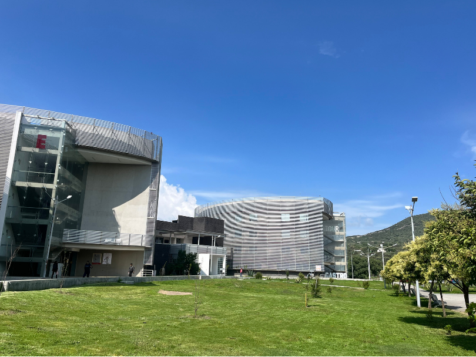

01
Crea tu cuenta
Registro individual mediante correo electrónico y contraseña, con verificación de identidad por correo.

El 12 Congreso Internacional del ICEA reunirá perspectivas académicas y de investigación sobre la transformación digital y los desafíos contemporáneos. Pronto compartiremos la convocatoria, las fechas y los detalles de participación.
Estamos preparando una plataforma propia para que las y los autores gestionen sus trabajos directamente, sin formularios externos.
Registro individual mediante correo electrónico y contraseña, con verificación de identidad por correo.
Captura de información académica, registro de coautores y carga segura de manuscritos.
Folio, acuse de recepción y seguimiento de los trabajos desde un espacio personal.
Cada participante podrá crear su propia cuenta y consultar sus envíos. El acceso se habilitará cuando estén listos los servicios de autenticación, almacenamiento y protección de datos.
Próximamente podrás iniciar sesión o crear una cuenta nueva.
Convocatoria, líneas temáticas, fechas, programa académico y recepción de trabajos se publicarán en este mismo sitio cuando sean confirmados.